Kevin Shu
Every polytope is built out of inequalities of the form $a^{\intercal}x \le b$, which defines a half-space
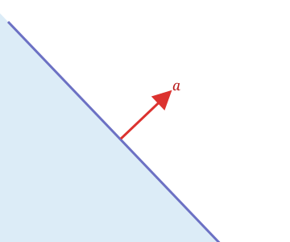
A half space has the property of being convex.
A set of points $S \subseteq \R^n$ is convex when the line segment containing any two points in a set is contained in the set.
Algebraically, this means the set is closed under taking averages: if $x,y \in S$ and $t \in [0,1]$, then
\[tx + (1-t)y \in S.\]
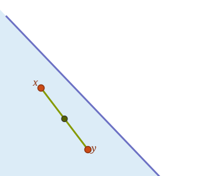
If two sets $S,T \subseteq \R^n$ are convex, then their intersection $S \cap T$ is also convex.
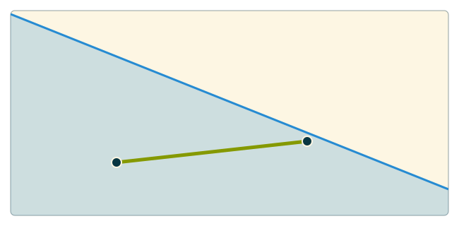
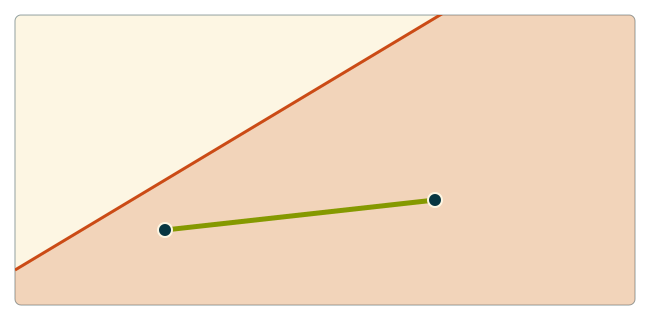
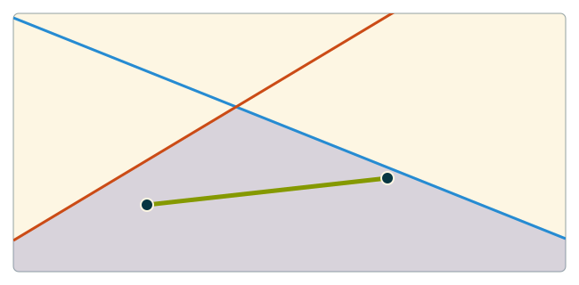
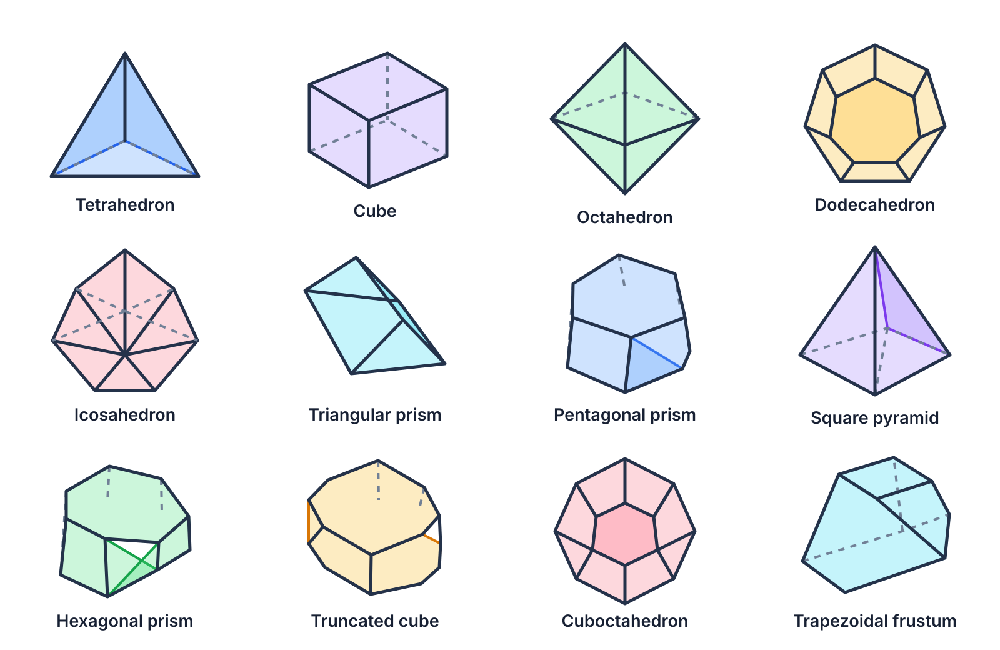
The feasible region for an LP is an intersection of halfspaces.
Intersections of convex sets are still convex, so every feasible region of an LP is convex.
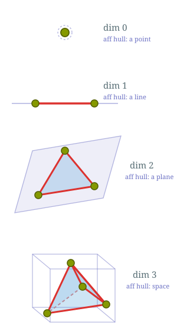
For a polytope defined by $P = \{x \in \R^n : Ax \le b\}$, where $A$ has rows $a_1, \dots, a_m$, we will let the set of implicit equations be $S = \{i : \forall x \in P, a_i^{\intercal}x = b_i\}$.
The affine hull is defined as $\{x \in \R^n : \forall i \in S, a_i^{\intercal}x = b_i\}.^*$
The dimension of the polytope is defined to be the dimension of this affine hull, which is the same as the rank of the matrix whose rows are the implicit equations.
* This is not the most general definition of the affine hull.What are the dimensions of the following polytopes?
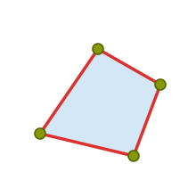
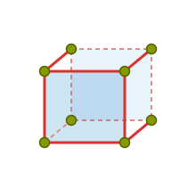
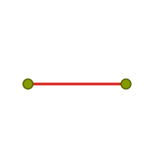
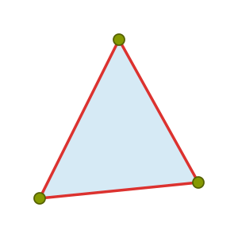
The faces consist of the 3 red edges, the 3 green vertices and the whole triangle (blue).
Let $P$ be a polytope $\{x \in \R^n : Ax \le b\}$. For a set $S \subseteq [m]$, the associated face of $P$ is the set of points where the associated inequalities are met with equality. \[ F = \{x \in \R^n : Ax \le b, \text{ and }\forall i \in S, a_i^{\intercal}x = b_i \}. \]
Each face is a polytope with its own dimension.
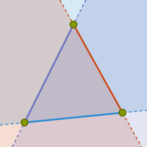
Zero dimensional faces are especially important; they are called vertices
A vertex in a polytope is a point where $n$ linearly independent inequalities hold with equality, where $n$ is the dimension of the ambient space.
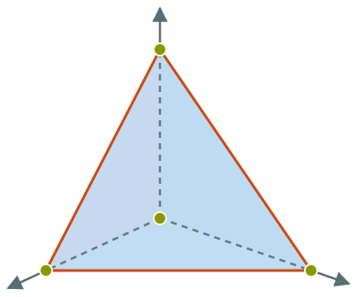
If we take $P = \{x \in \R^3 : x_1+x_2+x_3 \le 1, x_1, x_2, x_3 \ge 0\},$ then a vertex is a point where 3 of these inequalities are met with equality.
| Vertex | Tight inequalities (as equations) |
|---|---|
| $(0,0,0)$ | $x_1=0,\ x_2=0,\ x_3=0$ |
| $(1,0,0)$ | $x_1+x_2+x_3=1,$ $x_2=0,\ x_3=0$ |
| $(0,1,0)$ | $x_1+x_2+x_3=1,$ $x_1=0,\ x_3=0$ |
| $(0,0,1)$ | $x_1+x_2+x_3=1,$ $x_1=0,\ x_2=0$ |
The cube is $\left\{x \in \R^3 : \begin{aligned} 0 &\le x_1 \le 1\\ 0 &\le x_2 \le 1\\ 0 &\le x_3 \le 1 \end{aligned}\right\}$.
What are the 2 dimensional faces of the cube?
The 6 faces that are 2-dimensional (one for each inequality in its description). In a polytope, faces of dimension $\dim(P)-1$ are called facets, and they correspond to nonredundant constraints in the inequality description.
The cube is $\left\{x \in \R^3 : \begin{aligned} 0 &\le x_1 \le 1\\ 0 &\le x_2 \le 1\\ 0 &\le x_3 \le 1 \end{aligned}\right\}$.
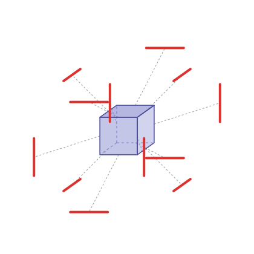
What are the 1 dimensional faces of the cube?
There are 12 edges in the cube (each facet has 4 edges, and each edge is on 2 faces for a total of $\frac{4 \times 6}{2} = 12$ ).
The cube is $\left\{x \in \R^3 : \begin{aligned} 0 &\le x_1 \le 1\\ 0 &\le x_2 \le 1\\ 0 &\le x_3 \le 1 \end{aligned}\right\}$.
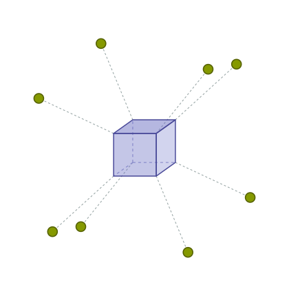
What are the 0 dimensional faces of the cube?
There are 8 vertices of the cube. We can count this as each vertex corresponds to setting 3 of the inequalities to equations. Each such equation specifies that $x_i = 0$ or $x_i = 1$; there are 8 ways to choose one of these choices for each coordinate.
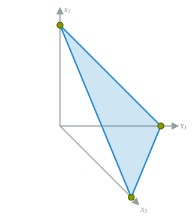
What do vertices correspond to for a polytope of the form $P = \left\{x \in \R^n : \begin{aligned} Ax &= b\\ x &\ge 0 \end{aligned}\right\}$?
Let's assume that $A \in \R^{m \times n}$ is full rank. This means that there are $n-m$ implicit equalities for this polytope; how many of the remaining inequalities should be made equalities to find a vertex?
Thus, the vertices should correspond to points in $P$ where $n-m$ of the inequalities $x_i \ge 0$ are tight. These are points where at least $n-m$ entries are 0.
These are exactly the basic feasible solutions!
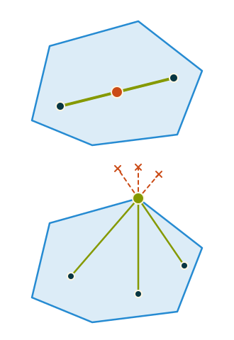
An extreme point of a set $S \subseteq \R^n$ is a point in $S$ not contained in the interior of any line segment joining two points in $S$.
Algebraically, $x \in S$ is an extreme point if for any $y, z \in S$ so that $x \neq y, z$, and any $t \in (0,1)$. \[ x \neq t y + (1-t)z \]
Theorem
A point in a polytope $P = \{x \in \R^n : Ax \le b\}$ is an extreme point if and only if that point is a vertex, i.e. there are $n$ linearly independent rows of $A$ so that $x$ meets those inequalities with equality.
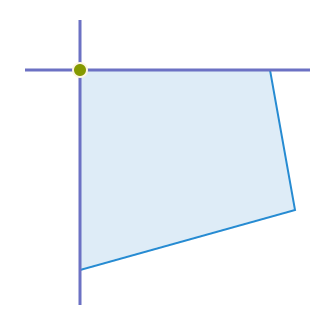
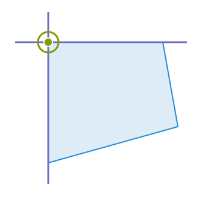
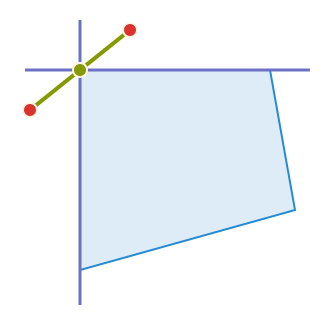
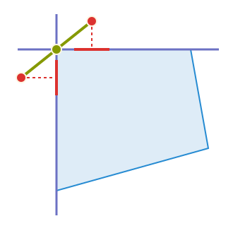
Proof of the Theorem: Let $x \in P$ be a vertex, so that $a_1^{\intercal}x = b_1, \dots, a_n^{\intercal}x = b_n$ where $a_1, \dots, a_n$ are linearly independent.
We can write this as a square system $A^= x = b^=$, so $x = (A^=)^{-1}b^=$ is the unique solution to this system.
If $x = t y + (1-t)z$, where $y, z \in P$ and $0<t<1$. \[ b_i = a_i^{\intercal}x = t(a_i^{\intercal} y) + (1-t)(a_i^{\intercal}z). \]
Both $a_i^{\intercal}y$ and $a_i^{\intercal}z \le b_i$, so the only way they can average to $b_i$ is if they are both equal to $b_i$! Therefore, $a_i^{\intercal}y = a_i^{\intercal}z = b_i$ for each $i$, so that $A^= y = A^= z = b^=.$ Therefore, $y = z = x$.
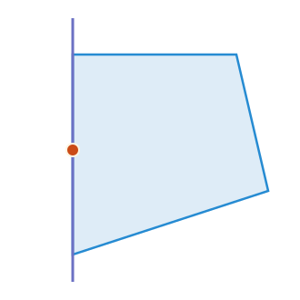
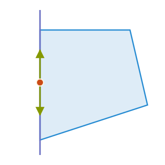
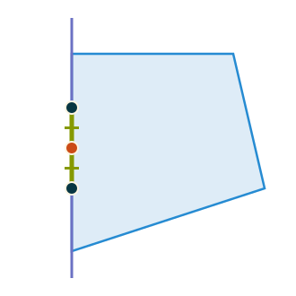
Proof of the converse: We show that if $x\in P$ is not a vertex, then it is not extreme. There may be tight inequalities at $x$, say $a_1^{\intercal}x = b_1, \dots, a_k^{\intercal}b = b_k$. The span of $a_1, \dots, a_k$ is not all of $\R^n$.
There must be some $v \neq 0$ so that $a_i^{\intercal}v = 0$ for each $i$. $a_i^{\intercal}(x + tv) = b_i$ for all $i=1,\dots,k$.
Every other inequality has slack: $a_i^{\intercal}x<b_i$ for $i > k$. We can choose $\varepsilon>0$ small enough that both $x+\varepsilon v$ and $x-\varepsilon v$ is still in $P$. Both points lie in $P$.
These points are distinct, and $x$ is their midpoint, so $x$ is not extreme: \[x=\tfrac12(x+\varepsilon v)+\tfrac12(x-\varepsilon v).\]
Extreme points of sets are important because they are often times the maximizers of linear functions on $S$.
Theorem
If a linear function $c^{\intercal}x$ has a unique maximum on a set $S \subseteq \R^n$, then that maximizer is an extreme point of $S$.
Proof: Let $x^*$ be the maximizer and suppose that $x^*$ is not an extreme point, so there are $y, z \in S$ with $y,z \neq x^*$ and $\lambda \in [0,1]$ so that $x^* = \lambda y + (1-\lambda)z$.
Well, then $c^{\intercal}x^* = t c^{\intercal}y + (1-t)c^{\intercal}z$, and since $x^*$ was the unique maximizer, $c^{\intercal}y, c^{\intercal}z < c^{\intercal}x^*$, and we get the contradiction that $c^{\intercal}x^* < c^{\intercal}x^*$.
If $S$ is compact, then any linear function is maximized at an extreme point of $S$.
It is not always true that a bounded linear function on a polytope has an extreme point as a maximizer; for example, consider maximizing $x_1+x_2+x_3$ subject to the constraint that $x_1+x_2+x_3=0$. Every point on this hyperplane is a maximizer, but it has no extreme points.
For the feasible set of an LP in standard equality form, though, something stronger holds.
Theorem
If $P = \{x \in \R^n : Ax = b, x\ge 0\}$ is a nonempty polytope, and $c^{\intercal}x$ is a linear function that is bounded from above on $P$, then there is a maximizer that is an extreme point.
The most important theorem in convex geometry.
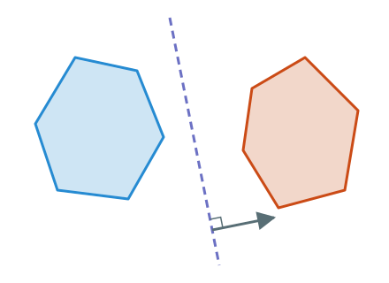
Separating Hyperplane Theorem
If $P$ and $Q$ are two convex polytopes in $\R^n$, and $P \cap Q = \varnothing$, then there exists some $z$ so that $z^{\intercal}p < z^{\intercal}q$ for any $p \in P$ and $q \in Q$.
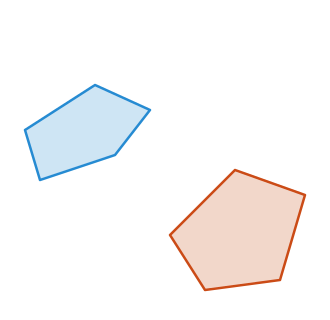
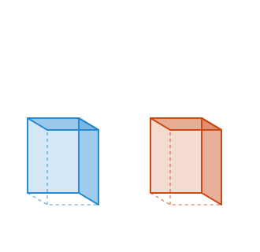
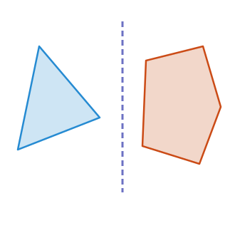
We can use the separating hyperplane theorem to prove the following result, which essentially shows that any infeasible LP has a certificate of infeasibility.
Farkas' Lemma
The set $\{x\in \R^n : Ax = b, x \ge 0\}$ is empty if and only if there exists some $y$ so that $A^{\intercal}y \ge 0$ and $b^{\intercal}y < 0$.
Suppose $\{x:Ax=b,\ x\ge0\}$ is empty. Let \[P=\{x\in\R^n:Ax=b\},\qquad Q=\{x\in\R^n:x\ge0\}.\] These are disjoint polytopes: equations can be written as pairs of inequalities.
First, what if $P$ is empty? Then $b$ is not in the column space of $A$. By linear algebra, there is a vector $y$ orthogonal to every column of $A$ but not to $b$.
Scale $y$ so that $b^{\intercal}y=-1$. Then \[A^{\intercal}y=0\ge0,\qquad b^{\intercal}y=-1<0,\] giving the required certificate.
\[P=\{x\in\R^n:Ax=b\},\qquad Q=\{x\in\R^n:x\ge0\}.\]
Now suppose $P$ is nonempty. Separation gives $z\in\R^n$ such that \[z^{\intercal}q<z^{\intercal}p\qquad\text{for every }q\in Q,\ p\in P.\]
We claim that $z\le0$. If $z_i > 0$ for some $i$, then since the vector $te_i$ which is 0 in every entry, except for a t in entry $i$ is in $Q$, $z^{\intercal}(te_i) = t z_i < z^{\intercal}p$ for any $p \in P$, but this fails for $t$ large enough.
\[P=\{x\in\R^n:Ax=b\},\qquad Q=\{x\in\R^n:x\ge0\}, z^{\intercal} q < z^{\intercal}p.\]
We now claim that $z = -A^{\intercal}y$ for some $y \in \R^m$.
To see this, we will show that $z^{\intercal}v = 0$ whenever $v$ is in the kernel of $A$. By linear algebra facts, this implies that $z$ will be in the row span of $A$.
Suppose that $z^{\intercal}v \neq 0$ for some $v \in \ker(A)$. By replacing $v$ by $-v$ if necessary, we can assume that $z^{\intercal}v < 0$. If we let $p \in P$, then $p + tv \in P$ for all $t > 0$, and so we would again arrive at a contradiction of the fact that $z^{\intercal}p > z^{\intercal}q$.
\[P=\{x\in\R^n:Ax=b\},\qquad Q=\{x\in\R^n:x\ge0\}, z^{\intercal} q < z^{\intercal}p.\]
We have seen that $z \le 0$ and $z = -A^{\intercal}y$ for some $y$, and so we have that $Ay \ge 0$.
To show that $y$ is a valid certificate of infeasiblility, it remains to show that $b^{\intercal}y < 0$.
To see this, let $x_0$ be be such that $Ax_0 = b$, and note that $-z^{\intercal}x_0 = -y^{\intercal}Ax_0 = y^{\intercal}b$, and that $-z^{\intercal}x_0 < -z^{\intercal}0 = 0$, since $0 \in Q$.
This concludes the proof.
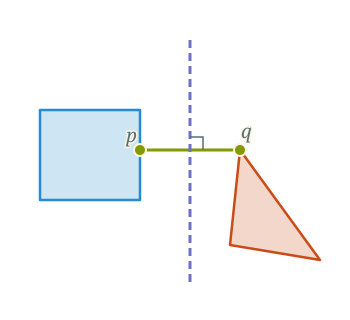
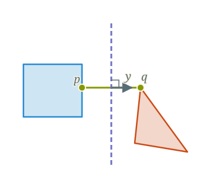
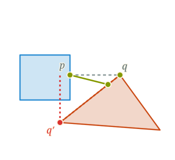
Let $p$ and $q$ be two points minimize the value of $\min_{p \in P, q \in Q} \|p-q\|.^*$
We claim that $y = q - p$ is a valid separating hyperplane between $p$ and $q$.
Suppose that there were some $p', q'$ so that $y^{\intercal}p' \ge y^{\intercal}q'$, then we could find another pair of points with smaller distance.
$*$ Showing such a pair exists requires some work.